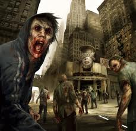
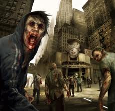

Your Survival Guide...The only thing that matters
ZETA - Zombie Emergency Prevention Agency
While they are in a sense our competitors, I say it's better to be prepared than caught with your pants down. They are a full on Zombie Tactical Milita who conduct trainings, as well as give tips you will need to survive Z-Day. you can receive Intel or sign-up to be an Agent.
Z.A.P.S. - Zombie Apocalypse Preparation Society
they might not be a Government agency, or even a milita training for Z-Day, but they might be another good resource for information. Follow them on 
Homeland Security
If you don't know what this agency is, you must be living on a rock. This is the agency tasked with protecting the United States here on the home front. Anything categorized as a terrorist is handled by this agency. The question is - when Z-Day comes, will Zombies be labeled terrorists?
CDC - Centers for Disease Control
The CDC has made it clear they don't want civilians contacting them, but it's still a good idea to check them out every now and then. And when they release things the general public and the media claim is a joke, never assume. Question everything.
Good luck...and when the dust settles, may we see each other once more as we have always been...uninfected.

 
